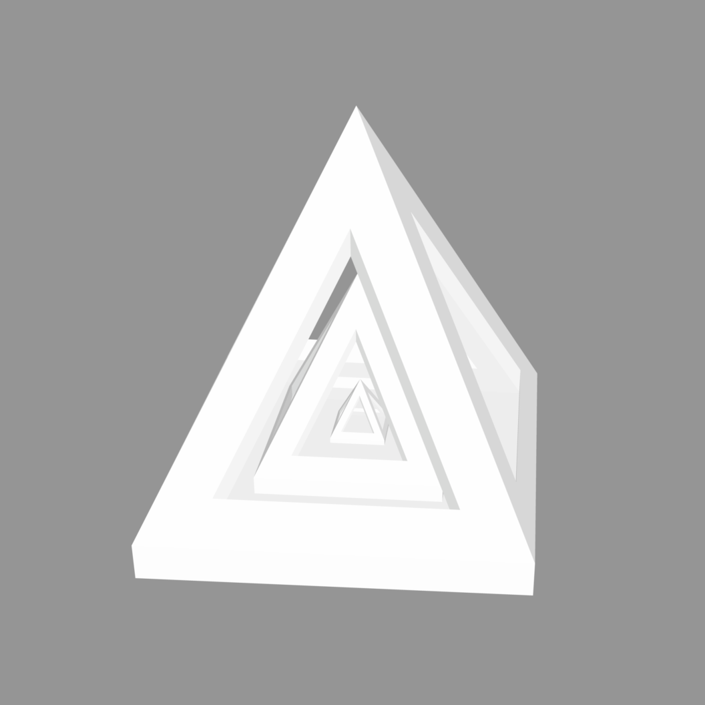

A3: Getting Started with 3D Printing
This assignment asked us to create a (1) three cubes with different settings, (2) one cube with a concentric top and bottom, (3) tubes with different extrusion wall thickness, (4) cylinders with different settings, and (5) one nested object.
Low quality cube: Time = 14 min; Width = 20.2 mm; Height = 19.7 mm

Medium quality cube: Time = 25 min; Width = 19.8 mm; Height = 19.7 mm

High quality cube: Time = 38 min; Width = 19.7 mm; Height = 19.6 mm

Cube with concetric top and bottom: Time = 39 min; Width = 20.0 mm; Height = 20.0 mm

Tube 3x3cm single extrusion wall: Time = 25 min; Width = 29.8 mm; Height = 29.6 mm

Tube 3x3cm double extrusion wall: 35 minutes; Width = 29.7 mm; Height = 29.6 mm

Cylinder 3x3cm with 0.1mm tolerance: 35 minutes; Width = 29.6 mm; Height = 30.1 mm

Cylinder 3x3cm with 0.001mm tolerance: 37 minutes; Width = 29.9 mm; Height = 29.6 mm

Cylinder printed on its side: 42 minutes; Width = 29.5 mm; Height = 30.1 mm

Nested object:
For this assignment, I tried to make a three hollow pyramids nested into one another.

I printed in low settings because I had no issues, but when I checked on it in the middle, the base was not fully supported, which made the object move while it was printing. Therefore, I stopped the print and plan to print again with a better quality settings.
Link to my the cube STL file
Link to my the tube STL file
Link to my the cylinder STL file
Link to my the nest object STL file
Credit
Thank you to Junchao's presentation and help during class.